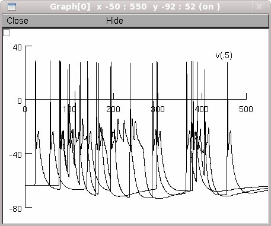
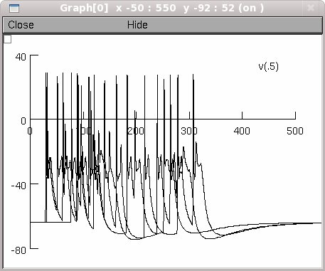
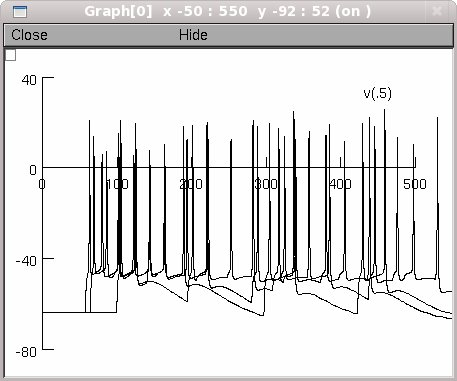
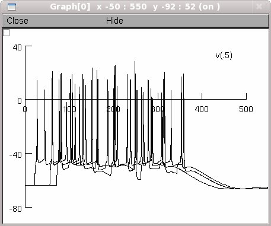

NEURON mod files from the paper: Control of GABA release at single mossy fiber-CA3 connections in the developing hippocampus. Safiulina VF, Caiati MD, Sivakumaran S, Bisson G, Migliore M and Cherubini E (2010) Front. Syn. Neurosci. 2:1. doi:10.3389/neuro.19.001.2010 The simulation file develop.hoc reproduces the simulations shown in Fig.7 of the paper. Questions on how to use this model should be directed to michele.migliore@pa.ibf.cnr.it Example use: Start the model by auto-launching from ModelDB or: download and extract the archive and compile the mod files using mknrndll (windows, mac OS X), or nrnivmodl (linux/unix) and then start by double clicking the mosinit.hoc (windows), dragging and dropping the mosinit.hoc onto the nrngui icon (mac OS X), or typing "nrngui mosinit.hoc" (linux/unix). When the simulation is started press the appropriate button to run under particular conditions to produce graphs as in Figure 7. To get exactly the same traces for each panel in the figure one has to start the simulation from the beginning every time (to seed the random number generator). In the below only the first figure was started from the beginning and therefore matches the paper while the others are similar: Glutamate at 20 Hertz:  Glutamate at 40 Hertz:  GABA at 20 Hertz:  GABA at 40 Hertz: 